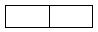
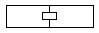
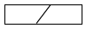
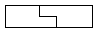
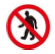
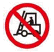
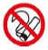
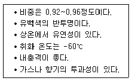
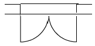

플라스틱창호기능사 (2002-10-06 기출문제)
1과목: 건축일반
1. 내진, 내구적이나 내화적이지 못한 구조는?
- 벽돌구조
- 돌구조
- 철골구조
- 철근콘크리트조
(정답률: 71%)

2. 도면의 이해를 돕기위해 설명이나 문자를 써 넣는 것을 무엇이라 하는가?
- 지문
- 설명
- 주기
- 해석
(정답률: 75%)
3. 철근이음의 겹침길이는 압축부분일 경우 얼마인가?
- 25d 이상
- 30d 이상
- 40d 이상
- 45d 이상
(정답률: 67%)
4. 프리스트레스트 콘크리트 구조를 설명한 것 중 틀린 것은?
- 철근과 콘크리트를 써서 특수처리, 가공하는 구조이다.
- 프리텐션 방식과 포스트텐션 방식이 있다.
- 철근은 고장력 강재를 쓴다.
- 소규모 건물에 적합한 구조이다.
(정답률: 87%)
5. 쪽매의 종류에서 딴혀쪽매의 그림으로 맞는 것은?




(정답률: 84%)
6. 실내투시도 또는 기념건축물과 같은 정적인 건물의 표현에 효과적인 투시도는?
- 평행투시도
- 유각투시도
- 경사투시도
- 조감도
(정답률: 80%)
7. 휨, 전단, 비틀림 등에 대하여 역학적으로 유리하며, 특히 단면에 방향성이 없으므로 뼈대의 입체구성을하는데 적합하고 공장, 체육관, 전시장 등의 건축물에 많이 사용되는 구조는?
- 경량강구조
- 강관구조
- 철골구조
- 조립식구조
(정답률: 58%)
8. 다음 중 여닫이 문을 자동적으로 닫을 수 있게 한 철물은?
- 플로어힌지
- 도어홀더
- 도어클로저
- 도어행거
(정답률: 80%)
9. 건축물의 각 실내의 입면을 그린 도면으로 각 실내의 입면을 그린 다음 벽면의 형상, 치수, 마감재료 등을 표시하는 도면은?
- 기초 평면도
- 단면도
- 천정 평면도
- 전개도
(정답률: 71%)
10. 철근콘크리트 슬래브에서 단변과 장변 각 방향에서 철근 전단면적은 콘크리트 전단면적의 얼마 이상으로 하는가?
- 0.1%
- 0.2%
- 0.35
- 0.45
(정답률: 87%)
11. 설계도면이 갖추어야 할 요건 중에서 옳지 않은 것은?
- 객관적으로 이해되어야 한다.
- 일정한 규칙과 도법에 따라야 한다.
- 정확하고 명료하게 합리적으로 표현되어야 한다.
- 모든 도면의 축척은 통일되어야 한다.
(정답률: 87%)
12. 건축 구조형식에 따른 분류 중 가구식 구성방법에 속하는 구조는?
- 철근콘크리트조
- 벽돌조
- 철골조
- 블록조
(정답률: 62%)
13. 벽돌구조에서 공간벽에 대한 설명 중 잘못된 것은?
- 벽체에 공간을 두어서 이중으로 쌓은 벽이다.
- 공기층에 의한 단열효과가 있다.
- 습기 차단에는 불리하다.
- 공간너비는 5-7cm 정도로 하고 단열재를 삽입한다.
(정답률: 77%)
14. 플랫슬래브에서 슬래브의 최소 두께는?
- 8cm
- 12cm
- 15cm
- 18cm
(정답률: 66%)
15. 리벳이나 볼트의 중심간 거리를 나타낸 말은?
- 게이지 라인
- 게이지
- 클리어런스
- 피치
(정답률: 84%)
16. 다음 중 기본 설계도에 해당하지 않는 것은?
- 배치도
- 단면도
- 각부상세도
- 투시도
(정답률: 73%)
17. 평면도에서 나타내야 할 사항이 아닌 것은?
- 창호의 단면모양
- 벽두께
- 가구의 위치
- 천정의 높이
(정답률: 77%)
18. 철근 콘크리트 구조에서 보의 깊이로 적당한 것은?
- 스팬의 1/10정도
- 스팬의 1/20정도
- 스팬의 1/30정도
- 스팬의 1/40정도
(정답률: 67%)
19. 목재구조 반자틀의 구성요소가 아닌 것은?
- 반자 돌림대
- 반자틀 받이
- 걸레받이
- 달대받이
(정답률: 92%)
20. 조적조에서 백화현상 방지대책으로 적당하지 않은 것은?
- 모르타르용 물은 깨끗한 것을 사용한다.
- 줄눈 모르타르에 염류를 혼입한다.
- 벽면에 우수 침투방지를 위한 차양 루버 등을 설치한다.
- 벽면에 파라핀 도료를 발라 염류가 나오는 것을 막는다.
(정답률: 70%)
2과목: 플라스틱개론
21. 가설 구조물의 요건이 아닌 것은?
- 위치성
- 안전성
- 작업성
- 경제성
(정답률: 48%)
22. 사고의 원인중 인적 요인에서 심리적 원인이 아닌 것은?
- 망각
- 고민
- 집착
- 피로
(정답률: 75%)
23. 산업체 현장에서의 고소작업의 높이의 기준은?
- 1m
- 2m
- 3m
- 4m
(정답률: 77%)
24. 사고발생 원인에서 불안전한 행동에 속하는 것은?
- 안전 방호 장치 결함
- 복장 보호구의 결함
- 기계 기구의 잘못 사용
- 생산 공정의 결함
(정답률: 70%)
25. 사고 발생의 요인과 관계가 가장 적은 것은?
- 유전과 환경의 영향
- 심신의 결함
- 불안전한 행동 및 상태
- 근로자의 학력
(정답률: 82%)
26. 근로자가 150명인 작업장에서 1년에 6건의 재해가 발생하였다. 천인율은 얼마인가?
- 15
- 20
- 30
- 40
(정답률: 69%)
27. 안전관리 조직의 기본 형태와 관련이 없는 것은?
- 직계직 조직
- 참모식 조직
- 직계,참모 조직
- 기능직 조직
(정답률: 86%)
28. 재해의 종류 중에서 자연재해에 해당되는 것은?
- 교통사고
- 가스폭발
- 홍수
- 화재
(정답률: 89%)
29. 다음 중 사용금지를 의미하는 것은?



(정답률: 89%)
30. 하인리히 재해 예방원리 중 순서가 맞는 것은?
- 안전관리조직-사실의발견-분석-시정방법-시정정책
- 안전관리조직-분석-사실의발견-시정방법-시정정책
- 분석-안전관리조직-사실의발견-시정방법-시정정책
- 분석-사실의발견-안전관리조직-시정방법-시정정책
(정답률: 83%)
31. 재해방지 대책의 3E가 아닌 것은?
- 기술적 대책
- 환경적 대책
- 교육적 대책
- 단속적 대책
(정답률: 79%)
32. 효율적인 안전관리를 위한 4가지 기본 관리 사이클이 아닌 것은?
- 계획
- 예산
- 실시
- 조치
(정답률: 89%)
33. 재해가 발생했을 때 조치할 사항이다. 바르게 연결된 것은?
- 재해조사-원인분석-대책수립-긴급조치
- 긴급조치-재해조사-원인분석-대책수립
- 대책수립-원인분석-긴급조치-재해조사
- 재해조사-대책수립-원인분석-긴급조치
(정답률: 72%)
34. 재해손실비 중 간접비에 해당되지 않는 것은?
- 생산손실
- 시간손실
- 시설물자손실
- 유족보상비
(정답률: 90%)
35. 보호구로서 갖추어야 할 구비요건과 거리가 먼 것은?
- 착용이 간편할 것
- 위험요소에 대한 방호가 안전할 것
- 작업에 방해가 되지 않을 것
- 가격이 저렴할 것
(정답률: 90%)
36. 다음 중 창호의 방음성을 나타내는 단위로 맞는 것은?
- Hz
- kg
- dB
- Watt
(정답률: 87%)
37. 다음 중 플라스틱창호의 가공기 중 용접면의 비드를 제거하기 위한 기계는?
- 절단기
- 개공기
- 사상기
- 용접기
(정답률: 93%)
38. 우리나라의 창호 표준을 제시한 규격은?
- KS
- JIS
- DIN
- ASTM
(정답률: 95%)
39. 다음은 플라스틱의 원료를 연결한 것이다. 틀린 것은?
- 아세틸렌 : 염화비닐
- 에틸렌 : 폴리스티렌
- 콜타르 : 우레아수지
- 프로필렌 : 아크릴수지
(정답률: 64%)
40. 다음 중 사출 성형의 장,단점에 대한 설명으로 옳지 않은 것은?
- 고속, 대량, 자동화 생산이 가능하다.
- 원료의 낭비와 마무리 손질이 극히 적다.
- 금형이 저렴하다.
- 살 두께가 얇은 대형 성형품에는 적합하지 않다.
(정답률: 83%)
3과목: 작업안전
41. 다음 울거미 재료의 종류별 기호를 나타낸 것이다. 옳은 것은?
- P-플라스틱
- A-유리
- G-알루미늄
- W-스테인리스
(정답률: 89%)
42. 다음 창호의 5대 기능 중 외부 풍압 등에 창호 및 유리가 견디는 정도를 나타내는 것은?
- 기밀성
- 수밀성
- 내풍압성
- 단열성
(정답률: 88%)
43. 다음 중 실리콘과 가장 거리가 먼 것은?
- 오일
- 고무
- 수지
- 플라스터
(정답률: 76%)
44. 합성수지 원료의 분류중 그 종류가 다른 것은?
- 멜라민수지
- 아크릴수지
- 요소수지
- 페놀수지
(정답률: 71%)
45. 성형강공법중 적층성형법에 대한 설명으로 잘못된 것은?
- 열경화성수지의 성형가공법이다.
- 프레스압력은 50~200kg/cm2 정도로 한다.
- 열 또는 촉매로서 경화한다.
- 금속 또는 유리 등으로 만들어진 틀안에 액상수지를 주입하여 열 또는 촉매로 경하시키는 방법이다.
(정답률: 51%)
46. 페놀수지에 대한 설명 중 틀린 것은?
- 페놀과 포르말린을 원료로 하여, 산 또는 알카리를 촉매로 하여 만든다.
- 내후성은 양호하나, 전기절연성이 약하다.
- 수시자체는 취약하여 성형품, 적층품의 경우에는 충전제를 첨가한다.
- 200℃이상에서 그대로 두면 탄화, 분해되어 사용 할 수 없게 된다.
(정답률: 70%)
47. 플라스틱 창과 금속재 창을 비교 설명한 것이다. 틀린 것은?
- 플라스틱창의 기밀성능이 금속재창보다 우수하다.
- 수밀성능은 금속재창이 우수하다.
- 현장가공성은 금속재창이 우수하다.
- 단열과 방음 성능은 일반적으로 플라스틱창이 우수하다.
(정답률: 68%)
48. 창문과 창호 철물에 관한 기술 중 옳지 않은 것은?
- 무거운 대형 자재문의 경우에는 플로어 힌지를 부착한다.
- 자재문은 자유경첩을 달아 안팎을 자유로 여닫을 수 있게 한 문이다.
- 접문의 도르래 철물은 크리센트를 설치한다.
- 미닫이문의 경우에는 문을 완전히 개폐할 수 있다.
(정답률: 72%)
49. 투명성을 요구하는 과즙음료 및 샴푸병 등에 사용되는 플라스틱 재료는?
- 폴리에틸렌
- 폴리염화비닐
- 폴리프로필렌
- 폴리스티렌
(정답률: 69%)
50. 다음 플라스틱의 성형방법 중 바르게 연결된 것은?
- 압축성형-용융된 원료를 금형에 주입후 압축공기를 이용하여 제품의 형태를 고착시키는 방법
- 사출성형-재료를 형틀에 넣고 가열한후 압력을가함
- 압출성형-원리는 사출성형과 비슷하며 연속적으로 제품을 생산하는 방식
- 중공성형-플라스틱 용융액을 수송기로 밀어내고 노즐을 통해 형틀에 채워 넣는 방법
(정답률: 60%)
51. 다음 중 플라스틱에 관한 설명이 바르지 못한 것은?
- 피막이 강하고 광택이 있어 도료에 적합하다.
- 강성과 탄성계수가 커서 구조재료로 적합하다.
- 투수성이 없고 흡수성이 적으므로 방수 피막제에 적당하다.
- 착색이 자유롭고 가공성이 있어 장식 마감재료 적당하다.
(정답률: 75%)
52. 내열성이 매우 우수하여 광범위한 온도에 안정하며, 전기절연성과 내수성이 좋아 전기 절연 재료 및 건축물의 신축줄눈에 사용되는 플라스틱은?
- 페놀 수지
- 아크릴 수지
- 에폭시 수지
- 실리콘 수지
(정답률: 65%)
53. 알키드 수지의 용도로 가장 적당한 것은?
- 장식품
- 도료
- 구조재
- 배관
(정답률: 81%)
54. 다음 플라스틱 제품 중 바닥재료로 사용되는 것이 아닌 것은?
- 비닐타일
- 비닐시트
- 멜라민 화장판
- 아스팔트 타일
(정답률: 70%)
55. 플라스틱 접착제에 대한 설명 중 옳지 않은 것은?
- 페놀수지는 내수성이 뛰어나 내수합판 접착에 사용된다.
- 멜라민수지의 내열, 내수성이 우수하여 금속, 유리접합에 적합하다.
- 에폭시수지는 알루미늄, 철제의 접착제로 우수한 성능을 갖고 있다.
- 실리콘수지는 전기절연성이 크고, 유리, 섬유 등의 접착에 쓰인다.
(정답률: 69%)
56. 오르내리 창에서 창 짝 간의 시건장치로 사용되는 철물은?
- 크리센트
- 나이트 래치
- 호자
- 모노 로크
(정답률: 78%)
57. 다음 중 플라스틱 재료의 장점이 아닌 것은?
- 가공이 용이하고, 디자인의 자유도가 높다.
- 착색이 용이하고 다양한 재질감을 낼 수 있다.
- 철에 비해 강도와 강성이 크고, 특히 반복 하중에 강하다.
- 전기 절연성이 우수하다.
(정답률: 94%)
58. 플라스틱의 성형방법 중 주조법에 대한 설명으로 틀린 것은?
- 소량생산에 적당하다.
- 압력은 가하지 않는다.
- 형은 석고형, 목형, 지형 및 금형이 있다.
- 아크릴 수지를 주로 사용한다.
(정답률: 56%)
59. 다음과 같은 특성을 갖는 열가소성 수지는?

- 폴리에틸렌
- 폴리프로필렌
- 염화비닐
- 폴리스티렌
(정답률: 43%)
60. 아래 그림의 평면기호의 명칭으로 옳은 것은?

- 쌍여닫이문
- 쌍여닫이창
- 자재문
- 여닫이창
(정답률: 85%)